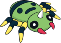
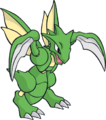
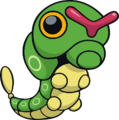
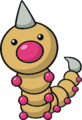
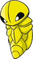

Nome: Bugsy
Insígnia: Colméia
Cidade: Azaléa
Biografia:
Sem discípulos para seguí-lo, e completamente desestimulado com sua função, fechou as portas do ginásio e partiu. Durante muito tempo a cidade de Azálea foi banida da jornada Johto. Pouco tempo atrás, um corajoso jovem ofereceu-se para reerguer o ginásio com os conhecimentos que lhe garantiram o título de “enciclopédia de Pokémon insetos”, e seu amor pelos insetos. Esse era Bugsy.
Bugsy é um jovem garoto, todos o confundem por uma menina, por causa de seu cabelo. Mesmo sendo jovem, ele batalha muito bem e tem bastante conhecimento sobre pokémon. Apesar da extrema confiança em seus pokémon, chegando à beira da prepotência, o novo líder colocou novamente o ginásio no circuito dos treinadores e tornou o local um verdadeiro centro de criação Pokémon, atraindo curiosos para que conheçam os mistérios dos Pokémon insetos e, dessa forma, sintam-se incentivados a treiná-los.
Pokémon:




